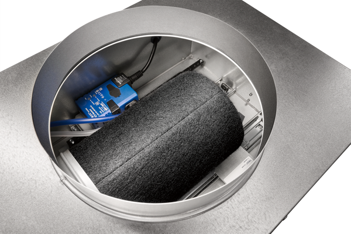

- Расход
- 17–617 м³/ч.
- Размеры
- RFD 160, 200, 250, 315 и 400; SIRIUS 125, 160, 200 и 250.
- Функции
- Воздухораспределитель + VAV/CAV-регулирование + шумоглушение + plenum box.
- Управление
- Аналоговый сигнал, MP-Bus, Modbus RTU или LonWorks — в зависимости от контроллера.
- Температурная разница
- −12…+10 K.
- Монтаж
- Заподлицо с потолком; отдельные варианты допускают подвесную установку.
RFD-SIRIUS особенно интересен для объектов, где нужно сократить количество отдельных компонентов над потолком и одновременно обеспечить VAV-регулирование и низкий уровень шума.